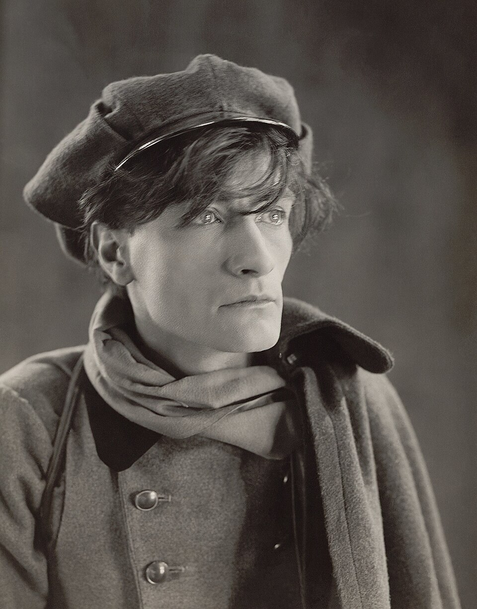

Édition numérique
The Mexico Letters of Antonin Artaud
Correspondance avec Jean Paulhan, 1935–1936
Trois lettres d'Antonin Artaud adressées à Jean Paulhan, encodées en XML-TEI et éditées dans le cadre du master Technologies numériques appliquées à l'histoire (ENC – PSL).

Sources
Textes publiés dans Œuvres (Gallimard, 2004). Originaux conservés à l'IMEC, fonds Paulhan.
Édition
Réalisée par Florent Farfouillon, ENC – PSL, 2025–2026.